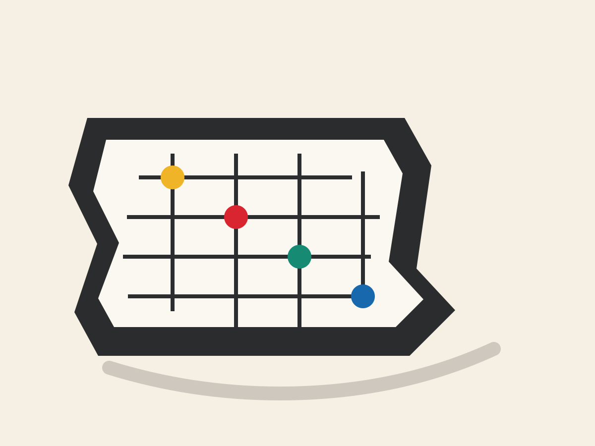

Civic Tools
Data, accessibility, public services, and local information that make everyday systems easier to navigate.
A preview for Nebraska builders
iHack Nebraska is a practical hackathon for students, founders, civic technologists, designers, and neighbors turning local problems into working prototypes.

project tracks shaped around civic life, agriculture, and community systems.
focused weekend to learn, prototype, demo, and find the next step.
skill levels welcome: code, design, research, storytelling, operations, and testing.
The idea
The best hackathon projects are narrow enough to finish and useful enough to keep improving. iHack Nebraska gives teams a place to test ideas with mentors, public datasets, community partners, and people who understand the local context.
Teams can bring an idea or pick from challenge prompts. The goal is not a perfect product; it is a credible demo, a clearer problem, and a path toward real users.
Data, accessibility, public services, and local information that make everyday systems easier to navigate.
Prototypes for producers, land stewards, water quality, weather resilience, and rural operations.
Student life, mutual aid, events, volunteer coordination, small business, and creative culture.
Weekend format
Kickoff, idea pitches, team formation, workspace setup, and first mentor rounds.
Build sessions, workshops, office hours, prototype reviews, and community dinner.
Final polish, demos, judging, awards, and next-step support for promising projects.
Preview
This static page can be shared while the WordPress site and event details mature. It introduces the concept, gives sponsors and participants a tangible first look, and keeps the public story aligned with the production theme.
Help shape it